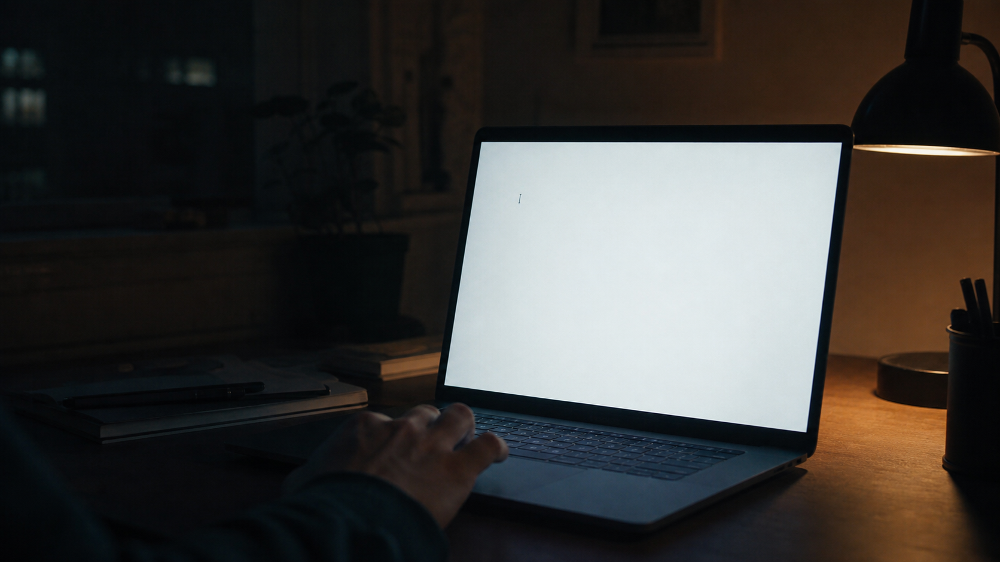
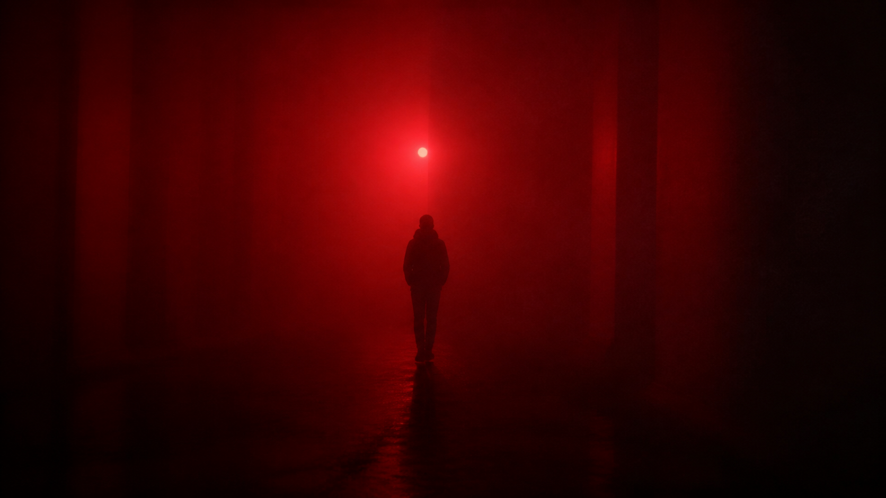
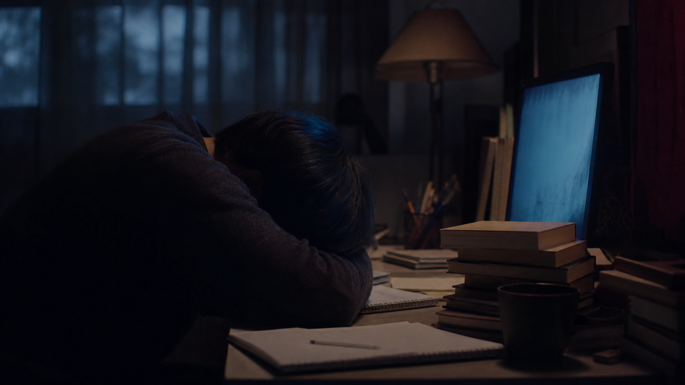
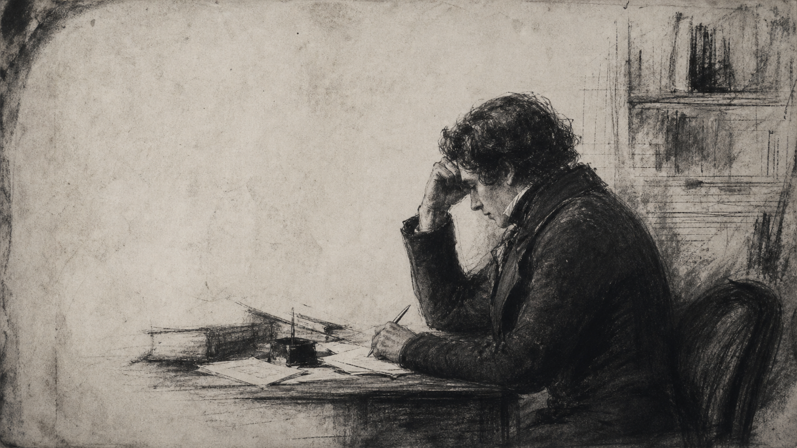
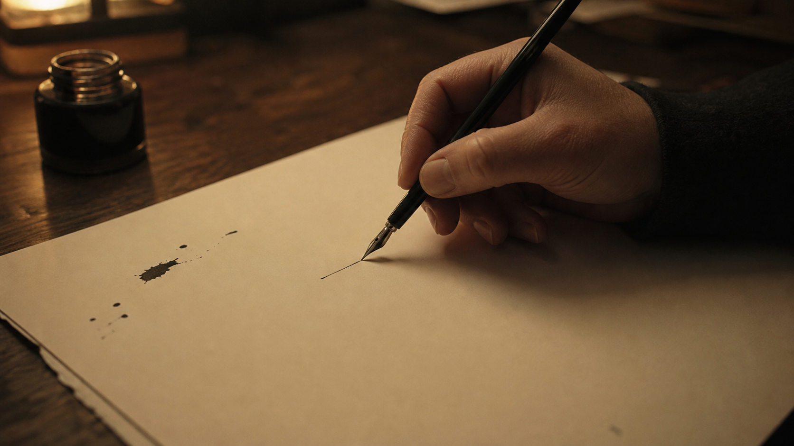
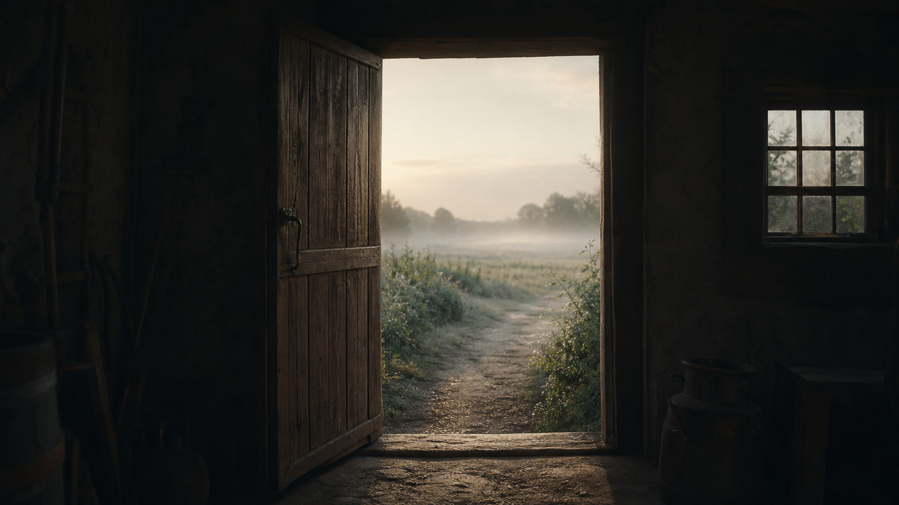

There is a version of beginning that looks almost invisible.
a cursora hand hoveringthe first mark

quiet / 01
the first mark
Nothinghashappenedyet.
Thewholedayiswaiting.
the pretend work
Wetellourselves
we'regettingready.
another reference open
another tutorial watch
another reason later
PREPARE
because the word sounds responsible.

the useful coat
the excuse
Sometimes
fearwearsausefulcoat.

the safe version
Itkeepstheworkclean.
Untouched.Impossibletojudge.
BRILLIANT
as long as it stays inside your head.
the moment it becomes a sentenceit can become ordinary.

archive / 02
version 01
Thefirstversion
mayleantoofartooneside.
the turn
Good.
Nowthethingisreal.

the mark
Youcanpointtoit.
Youcanchangeit.
clarity doesn't arrive first.it arrives because the work gives you something real to answer.
the after
Clarityismade
afterthemark.
the method
Actionisn'tthereward.
Itishowweknow.
ACTION
is how understanding is made.
one paragraphone bad shapeone minute
the next motion
the only rule
Move.
whilefearisstilltalking.

exit / 03
the exit
Eventually,thedarkroom
becomesadoorway.
BEGIN
THERE.
not a promise to finishjust evidence that you entered the room.
then begin again.the room is still yours.